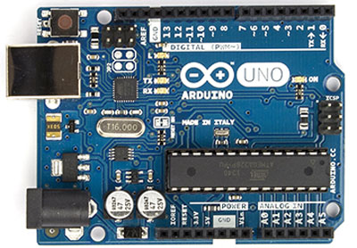

Over the last years I have been an enthusiastic maker: I really love to make lots of projects with my 4 Raspberry Pi boards using Debian’s based Raspbian distribution.
I also employ an Arduino Uno, a Sparkfun ESP8266 and a UDOO quad board.
I found in electronics a new, enjoyable hobby, and I strongly believe that the Internet of Things is a market having great potential looking at the future.

Arduino
An open-source shield based on Atmel AVR microcontroller

Raspberry Pi
A low cost, credit-card sized computer, supporting Linux-based distributions

ESP8266
A microcontroller with an integrated WiFi module
UDOO
A single board computer with Wi-fi and Quad-core CPU for Android and Linux, fully compatible with Arduino